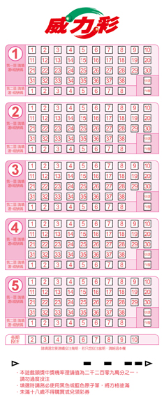
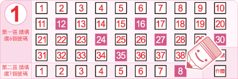
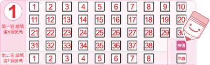
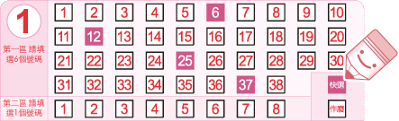
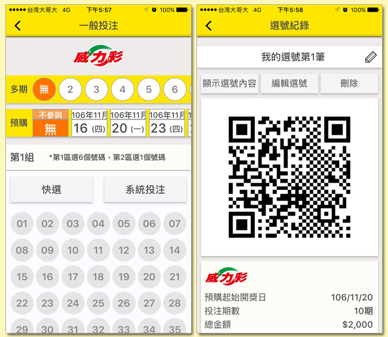
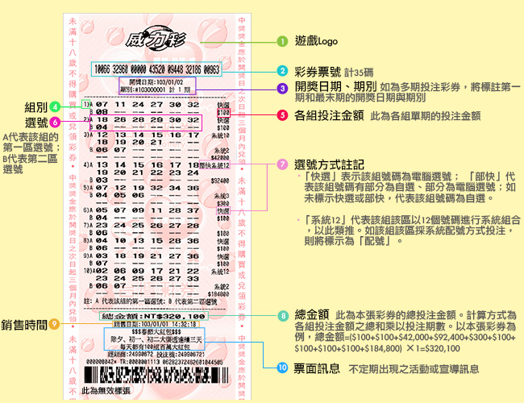

- ► 基本玩法
- 威力彩是一種樂透型遊戲，其選號分為兩區，您必須從第1個選號區中的01~38 的號碼中任選6個號碼，並從第2個選號區中的01~08的號碼中任選1個號碼進行投注， 這六個+一個號碼即為您的投注號碼。開獎時，開獎單位將從第1區01~38的號碼中隨機開出六個號碼，再從第2區01~08的號碼中隨機開出一個號碼，這一組六個+一個號碼， 就是該期威力彩的中獎號碼，也稱為「獎號」。您第1區的選號中，如果對中當期第1區開出之任一個獎號，而第2區亦對中當期第2區開出之獎號，即為中獎(普獎)，並可依規定兌領獎金。
- 
- 各獎項的中獎方式如下表：
| 中獎方式 | 中獎方式圖示 | 獎項 |
|---|---|---|
| 第1區六個獎號全中，且第2區亦對中獎號 | 頭獎 | |
| 第1區六個獎號全中，但第2區未對中 | 貳獎 | |
| 第1區對中任五個獎號，且第2區亦對中獎號 | 參獎NT$150,000 | |
| 第1區對中任五個獎號，但第2區未對中 | 肆獎NT$20,000 | |
| 第1區對中任四個獎號，且第2區亦對中獎號 | 伍獎NT$4,000 | |
| 第1區對中任四個獎號，但第2區未對中 | 陸獎NT$800 | |
| 第1區對中任三個獎號，且第2區亦對中獎號 | 柒獎NT$400 | |
| 第1區對中任二個獎號，且第2區亦對中獎號 | 捌獎NT$200 | |
| 第1區對中任三個獎號，但第2區未中獎號 | 玖獎NT$100 | |
| 第1區對中任一個獎號，且第2區亦對中獎號 | 普獎NT$100 |
- ► 獎金分配方式
-
1: 當期總投注金額（銷售收入）乘以總獎金支出率即為當期『總獎金』。本遊戲之總獎金支出率=55%。
2: 參獎、肆獎、伍獎、陸獎、柒獎及捌獎每注獎金分別固定為新臺幣150,000元、20,000元、4,000元、800元、400元及200元，玖獎及普獎每注獎金固定為新臺幣100元。
3: 頭獎及貳獎之實際中獎獎金係由總獎金扣除參獎至普獎之總額後，依下列獎金分配比率及實際中獎注數分配之（計算至元為止，元以下無條件捨去。該捨去部分所產生之款項將視為逾期未兌領獎金，全數歸入公益彩券盈餘）。
-
4: 頭、貳獎若無人獲得該獎，其獎金列入下一期同等獎項獎金內，此即為『累積獎金』。頭、貳獎如有『累積獎金』，則各獎分別加上其『累積獎金』。
5: 如當期頭獎有人中獎，且當期頭獎分配加計上期頭獎累積獎金後，仍未達新臺幣2億元時，當期頭獎獎金以新臺幣2億元整計算。
6: 頭、貳獎之每一獎項，其獎金均由得該獎之中獎注數均分（計算至元，元以下無條件捨去）。如係一注中獎則為獨得；如無中獎注數，則獎金列入次期該獎之『累積獎金』。
7: 參獎至普獎採固定獎額之方式分配之，惟如因熱門號碼開出，致參獎至普獎之獎金合計總數逾當期『總獎金』之百分之七十時，則參獎至玖獎仍依原固定金額分配，普獎獎額改依當期『總獎金』之百分之七十扣除參獎至玖獎獎金總額後由普獎之中獎人平分（計算至元為止，元以下無條件捨去。該捨去部分所產生之款項將視為逾期未兌領獎金，全數歸入公益彩券盈餘），其餘各獎（頭、貳獎）仍依原分配比例分配。
| 獎項 | 頭獎 | 貳獎 | 合計 |
|---|---|---|---|
| 獎金分配比率 | 89% | 11% | 100% |
- ► 投注方式及進階玩法
-
您可以利用以下三種方式投注威力彩：
一、使用選號單進行投注：
每張威力彩選號單最多可劃記5組選號，每組選號各含有2個選號區。投注時需在第1區內所含38個號碼中任選6個號碼，在第2區內所含8個號碼中任選1個號碼，以形成一注有效的選號。您可以依照自己的喜好，自由選用以下幾種不同的方式填寫選號單，進行投注。
* 注意，在同一張選號單上，各選號區可分別採用不同的投注方式。
選號單之正確劃記方式有三種，塗滿 、打叉
、打叉 或打勾
或打勾 ，但請勿超過格線。填寫步驟如下：
，但請勿超過格線。填寫步驟如下：
1.劃記選號
A.自行選號
在第1區內所含38個號碼中任選6個號碼，在第2區內所含8個號碼中任選1個號碼，以完成一組完整的選號。

B.全部快選
在選號區中，劃記「快選」，投注機將為您隨機產生一組選號 ( 第1區6個號碼+第2區1個號碼 ) 。

C.部分快選
您也可以只填選一部分選號，並劃記快選，投注機將為您挑出剩下的號碼。 以下圖為例，如果您在第1區選擇了6、12、25、37等四個號碼且第2區未選擇任何號碼，並劃記「快選」，第1區剩下的二個號碼和第2區的一個號碼，將由投注機隨機快選產生。

D.系統組合
第1區單獨採用系統組合：
第1區可一次投注7~16個幸運號碼，將您要投注的7~16個號碼同時劃記在第1區內即可，電腦系統將就您的選號排列出第1區所有可能的號碼組合。第1區單獨採用系統組合時，產生之總注數及總投注金額請詳見下表：
第1區單獨採系統組合時之總注數與總投注金額一覽表
選號數 總注數 總投注金額 7 7 700 8 28 2,800 9 84 8,400 10 210 21,000 11 462 46,200 選號數 總注數 總投注金額 12 924 92,400 13 1716 171,600 14 3003 300,300 15 5005 500,500 16 8008 800,800
第2區單獨採用系統組合：
第2區可一次投注2~ 8個幸運號碼，將您要投注的所有號碼同時劃記在第2區內即可，電腦系統將就您的選號排列出第2區所有可能的號碼組合。第2區單獨採用系統組合時，產生之總注數及總投注金額請詳見下表：
第2區單獨採系統組合時之總注數與總投注金額一覽表
選號數 總注數 總投注金額 2 2 200 3 3 300 4 4 400 5 5 500 選號數 總注數 總投注金額 6 6 600 7 7 700 8 8 800 - - -
E.系統配號
在第1區選號時，如果您只對5個號碼有把握，您可以只填選這5個號碼，電腦系統將就您選的5個號碼與剩下的33個號碼自動進行配對出33組第1區的選號。本功能僅提供在第1區以自選5個號碼與其餘33個號碼進行配號。
F.複合式系統投注
您在第1區和第2區同時進行系統投注時，總注數將等於第1區系統投注所產生之總注數乘以第2區系統投注所產生之總注數。例如：如果您在第1區以8個號碼進行系統組合，在第2區以2個號碼進行系統組合，則您的總投注注數將為56注（28×2＝56）。
2.劃記投注期數
您可以選擇就您的投注內容連續投注2~10期（含當期），您的投注號碼在您所選擇的期數內皆可對獎，惟在多期投注期間不得中途要求退/換彩券；如您在多期投注期間內對中任一期的獎項，可直接至任一投注站或中國信託商業銀行(股)公司指定兌獎處兌獎，不需等到最後一期開獎結束。兌獎時，投注站或中國信託商業銀行(股)公司指定兌獎處將回收您的彩券，並同時列印一張「交換票」給您，供您在剩餘的有效期數內對獎。
二、口頭投注
您也可以口頭告知電腦型彩券經銷商您要選的號碼、投注方式、投注期數等投注內容，並透過經銷商操作投注機，直接進行投注。
三、智慧型手機電子選號單(QR Code)投注
如果您的智慧型手機為iOS或Android之作業系統，您可先下載「台灣彩券」APP，並利用APP中的「我要選號」功能，填寫投注內容。每張電子選號單皆將產生一個QRcode，至投注站掃描該QR Code，即可自動印出彩券，付費後即完成交易。
 - ► 預購服務
-
1: 本遊戲提供預購服務，您可至投注站預先購買當期起算9期內的任一期非當期彩券。
2: 預購方式以告知投注站人員或智慧型手機電子選號單(QR Code)投注為之，故選號單不另提供預購投注選項。
- ► 售價
-
1: 威力彩每注售價為新臺幣100元（第一區六個號碼+第二區一個號碼所形成的一組選號稱為一注）。
2: 總投注金額＝投注總注數x100元x期數。
- ► 券面資訊
-

注意事項：彩券銷售後如遇有加開期數之情況，預購及多期投注之期數將順延。若彩券上的資料和電腦紀錄的資料不同，以電腦紀錄資料為準。